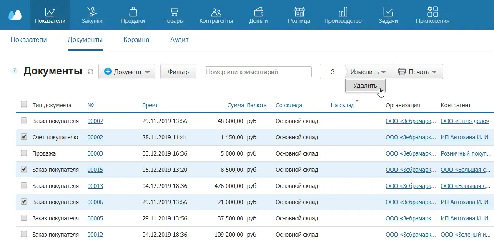
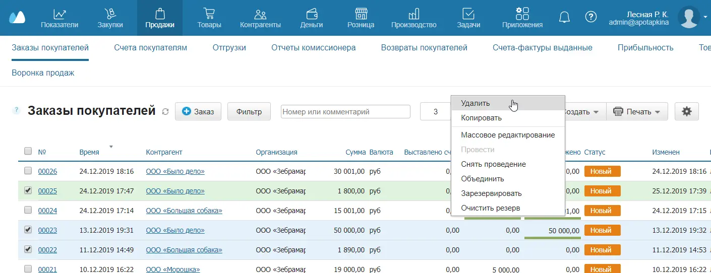
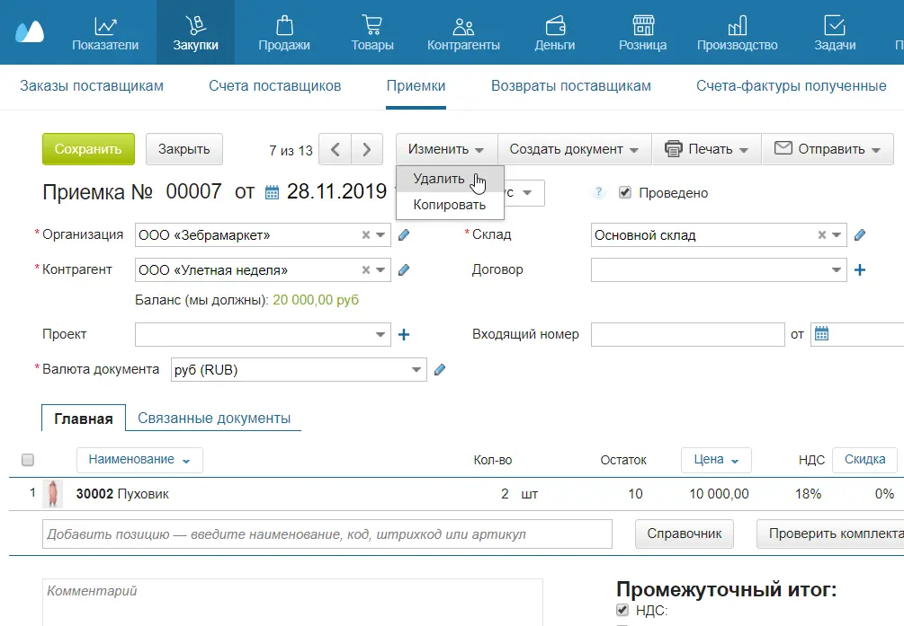
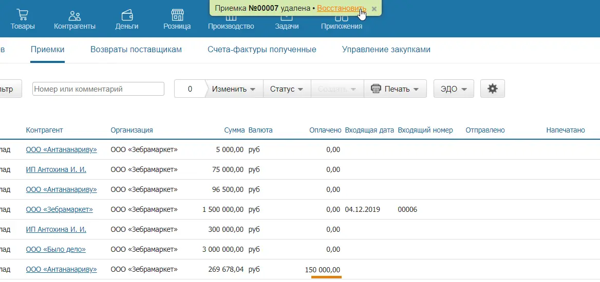
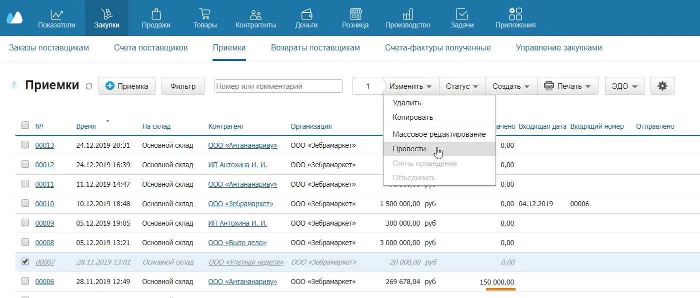
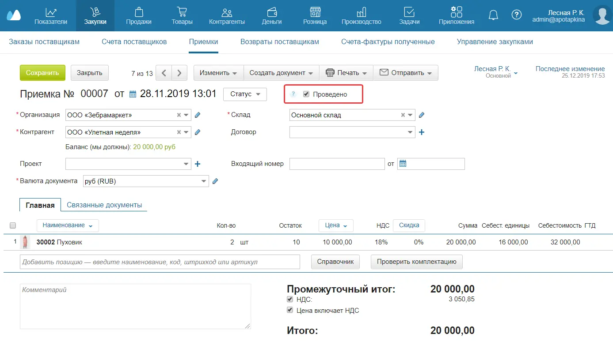

Удаление документов
Существует три способа удалить документ.
Из списка всех документов
Это удобно, когда вам надо удалить все документы из вашего аккаунта.
- Перейдите в раздел Показатели → Документы.
- Проставьте флажки напротив документов, которые нужно удалить.
- Нажмите вверху на кнопку Изменить и в выпадающем списке выберите Удалить.

Из списка документов
Рассмотрим на примере заказов покупателей.
- Перейдите в раздел Продажи → Заказы покупателей.
- Проставьте флажки напротив документов, которые нужно удалить.
- Нажмите вверху на кнопку Изменить и в выпадающем списке выберите Удалить.

Из карточки документа
Рассмотрим на примере приемки.
- Перейдите в раздел Закупки → Приемки.
- Откройте документ, который хотите удалить.
- Нажмите вверху на кнопку Изменить и в выпадающем списке выберите Удалить.

Восстановление документов
При удалении вверху появляется зеленая плашка, позволяющая тут же восстановить документ. Если вы удалили документ по ошибке, просто нажмите на ссылку Восстановить.

Позже документ при необходимости можно восстановить из Корзины — если она включена.
Удаление документа влияет на остатки: например, при удалении приемки остатки товаров также удалятся со склада. Другие документы, созданные на основе удаленного, останутся в системе.
После восстановления документ нужно провести — чтобы данные по остаткам тоже восстановились. Это можно сделать двумя способами.
Проведение восстановленных документов
Рассмотрим на примере приемок.
Из списка документов
- Перейдите в раздел Закупки → Приемки.
- Проставьте флажки напротив документов, которые нужно провести.
- Нажмите вверху на кнопку Изменить и в выпадающем списке выберите Провести.

Из карточки документа
- Перейдите в раздел Закупки → Приемки.
- Откройте документ, который хотите провести.
- Поставьте флажок рядом со словом Проведено.
- Нажмите Сохранить.

Управление доступом
На тарифах с управлением правами доступ настраивается индивидуально для каждого сотрудника: вы сами решаете, кто сможет удалять и восстанавливать документы, а также проводить их.